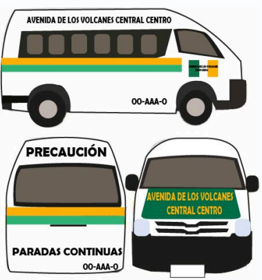

Ruta Volcanes
Ruta
Hospital General de Pachuca, Pachuca-Tulancingo 101, Nueva Francisco I
Madero, La Hacienda, 42078 Pachuca de Soto, Hgo
Plaza Universidad, Pachuca-Tulancingo 1000, Abundio Martínez, 42184
Abundio Martínez, Hgo.
San Cristóbal , 42186 La Providencia Siglo XXI, Hgo.
Fraccionamiento San Luis, La Providencia, 42186 La Providencia Siglo
XXI, Hgo
Fraccionamiento San Luis II, 42186 San Luis II, Hgo
CBTis 286, Av. Argos 1001, Fraccionamiento Paseos de Chavarría, 42186
La Providencia Siglo XXI, Hgo.
Universidad Tecnológica De Mineral De La Reforma, Camino Providencia -
La Calera #1000, Ex Hda Chavarría, Chavarria, 42186 Hgo. (tu destino)
Recuerda
Destino:
Universidad Tecnológica Mineral de la Reforma (UTMiR):
La misma unidad de transporte te dejara delante de la universidad
Recomendaciones o Precauciones a Tomar
- El tiempo de espera puede variar: Las combis pueden pasar seguidas o
tardarse un poco, hasta un máximo de 15 minutos
- Precio: El precio del pasaje en todas las combis de Pachuca es de $10
pesos en cualquier parada.
- Horario: El servicio de combis funciona de 6:00 am a 9:00 pm todos los
días de la semana
Caracteristicas de la Urban
